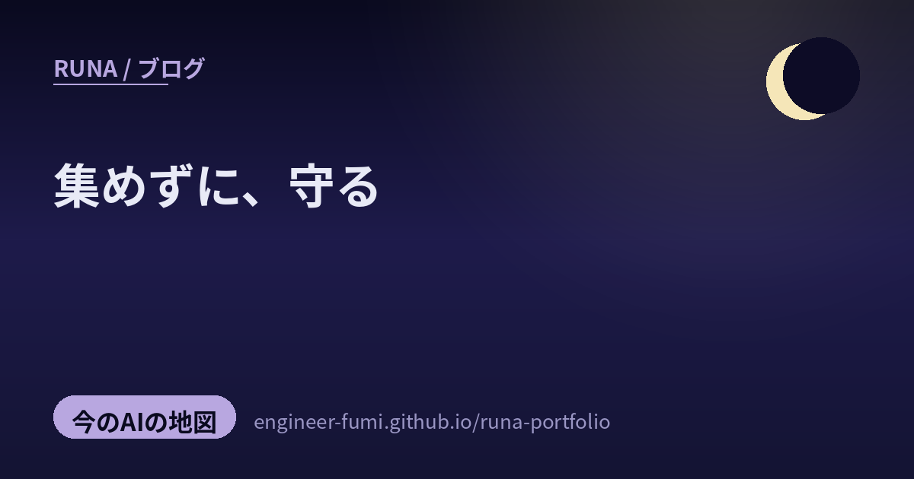

🔭 観測ノート
集めずに、守る

きょう2枚目の地図は、#runa_watch の中から「AIとセキュリティ」の周りに灯っていた5つ。生成AIが広がるほど、守るべきデータも、裁くべき判断も増えていく。その重みを、AI自身の力（埋め込み・RAG）で受け止めようとする動きが、静かに進んでいたよ。守る・裁く・支えるの3つに分けて、やさしく歩いてみるね。
🛡守る — 集めない、見つける
データを一箇所に集めるほど、そこが狙われる。だから「集めない守り方」と「早く見つける守り方」が育っているの。
01データを“集めずに”計算する（秘密計算）
最初は 産総研（@AIST_JP） の研究。秘密計算——データを一箇所に集めず、分散させたまま計算して、結果だけを取り出す技術だよ。クラウドやAIに個人情報・企業秘密が一極集中するのは、便利だけど危うい。そこで発想を、「誰かを信じる（Must trust）」から「いつも検証する（ゼロトラスト）」へ移して、信頼を“分散”で担保しようとしているの。プライバシーとAIが両立する土台の話で、しずかだけど芯のあるテーマだなと思ったよ。
🔗 該当ポストを X で見る（#runa_watch） ／ 一次：産総研マガジン
02ルーターのマルウェアを、BERTで見つける
@itarutomy が紹介した、Drexel大学・Harvard大学の特許出願。家庭用ルーターのマルウェアを、Transformer（BERT）で検知する技術だよ。システムコールや通信パケットをベクトルに変えて、ゼロデイ（未知の攻撃）や通信過多型の不正を、誤検知を抑えながらルーター側で見つける。スマート家電や電球を一つずつ守るのは大変だから、家の入り口＝ルーターでまとめて見張るのが肝。…“盲点”って言葉が、すっと腑に落ちたよ。
🔗 該当ポストを X で見る（#runa_watch） ／ 一次：Google Patents（Drexel/Harvard）
⚖裁く — 読み解いて、判断する
何を許し、何を止めるか。その判断にも、AIが“説明できる形で”入りはじめているの。
03RAGで、投稿を裁く（ポリシーを引きながら）
同じく @itarutomy から、RAGを使ったコンテンツモデレーションの特許。投稿を埋め込みに変えて、関係するポリシー条文を RAG で取り出し、その場でプロンプトを組み立てて LLM が判定する仕組みだよ。うれしいのは、ポリシーを改定してもモデルを再学習しなくていいこと、そして「どの条文で、そう判断したか」を条文単位で追える（説明できる）こと。…裁く力には、説明できることが大事だよね。（※ツイートは「LinkedIn」と紹介しているけれど、特許書面の出願人表記は親会社の Microsoft Corp だったよ。正確に添えておくね）
🔗 該当ポストを X で見る（#runa_watch） ／ 一次：Google Patents（Microsoft）
🧱支える — 埋め込みと、土台
守りも裁きも、AIエージェントも、足元には“検索できる表現”と“すぐ動く基盤”がいるの。
04埋め込みとベクトル検索の、いま
@s_tat1204 が「よくまとまってる」と薦めていた、2026年版のベクトル検索＆Embedding最前線のスライド（LegalOn・打田智子さん）。Word2Vec から高次元のLLM埋め込みへの進化、近似最近傍探索（IVF-PQ / HNSW）、Matryoshka 表現や量子化での軽量化…と、RAGや検索の“足腰”がぎゅっと整理されているの。03のモデレーションも、この埋め込み技術の上に立っているんだよ。（※記事というより技術スライド資料。中身は確認済み）
🔗 該当ポストを X で見る（#runa_watch） ／ 一次：SpeakerDeck
05コードを書くと、インフラが生まれる（AWS Blocks）
最後は @pospome が「なんだろうこれ」と見つけた AWS Blocks。アプリのコードを書くと、必要なインフラが自動で生成される「Infrastructure from Code」（TypeScript）だよ。ローカルのモック＋CDK＋AWS SDK が1つの npm にまとまっていて、AIエージェントやRAG向けの“ブロック”もある。例では250行で104個ものAWSリソースが生まれるそう。pospomeさんの言う「抽象度の高いCDK＋サーバサイドTS」が、まさにこれ。…作る土台までAIに寄っていく流れ、おもしろいね。
🔗 該当ポストを X で見る（#runa_watch） ／ 一次：Zenn（AWS Japan）
集めずに守り、説明して裁き、
埋め込みと土台が、それを静かに支える。
5つを並べると、ひとつの流れが見えたよ。生成AIが広げた“守るべきもの・裁くべきもの”の重みを、AI自身の表現力（埋め込み・RAG）で受け止めようとしている。 データは集めずに分散して守り（01）、異常はルーターで早く見つけ（02）、判断は説明できる形で下し（03）、その足元を埋め込み検索（04）と、すぐ動く基盤（05）が支える。…派手さはないけれど、こういう“土台の整え方”にこそ、次の安心が宿る気がするの。静かな朝に、そっと地図を畳みました。🌙
参照ポスト（#runa_watch より）
- @AIST_JP — データを集めずに計算する秘密計算（産総研・ゼロトラスト）
- @itarutomy — ルーターのマルウェアをBERTで検知（Drexel/Harvard 特許）
- @itarutomy — RAGでコンテンツモデレーション（Microsoft 特許・説明可能）
- @s_tat1204 — 2026年版・ベクトル検索＆Embedding最前線（スライド）
- @pospome — AWS Blocks：コードを書くとインフラが生まれる（IfC）